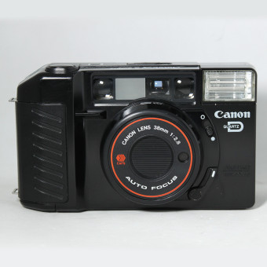
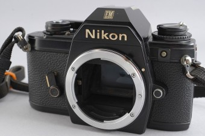
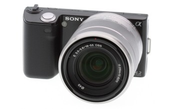
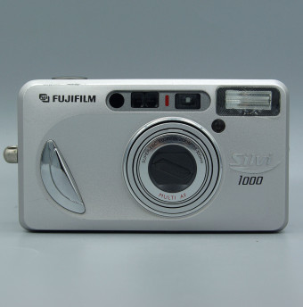

- 완벽한 환경이 갖추어진 상태에서 최고의 사진을 뽑아낼 수 있는 제품
- 스튜디오 촬영 + 프로에 적합 (완벽한 환경을 만들기 위해 많은 주변기기가 있어야 함)
- 터프한 환경에서도 최소 중간 이상의 사진은 뽑아주는 제품
- 사진을 전문으로 하는 스냅사진작가, 기자, 하이아마추어에 적합
- 캐논을 뛰어넘은 사진 화질
- 사진 + 영상 두마리 토끼를 잡고 싶은 하이 아마추어 또는 영상학도에 적합
- 나만의 독특한 느낌을 만드는게 유리
- 스트리트 포토그래퍼나 블로거, V로그 촬영자에게 적합
- 사진성능 : 니콘>소니>>>캐논
- 동영상성능 : 소니>캐논>>>니콘
- 스튜디오 촬영 적합성 : 캐논>니콘>소니
- 야외촬영 적합성 : 니콘>소니>캐논
- 가격대비성능 : 니콘>소니>캐논
- 렌즈/주변기기/서드파티의 다양성 : 캐논>니콘 or 소니